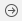

Ejercicios de tablas (2 puntos)¶
Vamos a crear una pequeña aplicación en la que se muestre una tabla con una lista de dato y se puedan insertar y eliminar filas
Crear la interfaz (0,25 puntos)¶
Crea otra pantalla, al estilo de la que aparece en la figura. Tiene que tener los siguientes componentes:
- Un text field
- Un button con el texto "Insertar"
- Un table view

Aunque habría que usar autolayout, para simplificar el ejercicio puedes ignorar este aspecto.
Mostrar datos en la tabla (0,75 puntos)¶
- Crea una clase Swift llamada
DSTablaque va a hacer de datasource de la tabla seleccionándola. Haz que elDSTablaimplemente el protocoloUITableViewDataSource - Conecta el
DSTablacon la propiedaddataSourcede la tabla - El
DSTablava a almacenar los datos en una propiedadlistade tipo array deString(puedes usar los nombres que aparecen en el ejemplo u otros datos cualesquiera, es indiferente)
1 2 | //en la clase DSTabla, definimos e inicializamos la propiedad var lista = ["Daenerys Targaryen", "Jon Nieve", "Cersei Lannister", "Eddard Stark"] |
- Ahora tendrás que implementar tú de manera adecuada los métodos:
tableView(_:, numberOfRowsInSection:)recuerda que debe devolver el número de filas de la tablatableView(_:, cellForRowAt:): recuerda que debe devolver la celda para una fila determinada
Insertar filas (0,5 puntos)¶
- Implementa en el datasource un método
insertarCelda(enTabla:,enFila:,conTexto:)que al pasarle elUITableView, un número de fila y un texto añada el texto a la lista de datos y luego añada visualmente la fila en la tabla.
En la interfaz haz que cuando se escriba un texto en el campo de texto y se pulse el botón Insertar se llame al método insertarCelda (enTabla:,enFila:,conTexto:) que has definido.
Delegate (0,5 puntos)¶
Vamos a hacer que se puedan "marcar" filas de la tabla. Para ello necesitas algún objeto que actúe de delegate. Crea para ello una clase DelegateTabla
- Haz que esta clase herede de
NSObjecte implemente el protocoloUITableViewDelegate - Implementa en esta clase un método similar al que en las transparencias marca o desmarca una fila poniéndole un "checkmark", pero aquí cambiando el texto a color rojo (propiedad
textColoraUIColor.red) y si está en rojo pasando a negro.
Ahora vamos a conectar el delegate con la tabla gráficamente, en vez de por código. Para ello:
- Arrastrar un componente
Objectal árbol de componentes de la pantalla del móvil (al árbol que aparece a la izquierda, no a la pantalla en sí). - Seleccionar el componente, y en el
Identity inspector(tercer icono del panel derecho de Xcode), escribir el nombre de la claseDelegateTablaenCustom Class. - Conectar tabla y delegate: seleccionamos la tabla con el ratón y vamos al
Connections inspector(el icono  panel derecho de Xcode). Arrastramos con el ratón (no hace faltaCtrl) desde el círculo que representa aldelegatehasta el icono del objeto que representa a la claseTablaDelegate
Una vez hecho esto, comprueba que funciona correctamente.